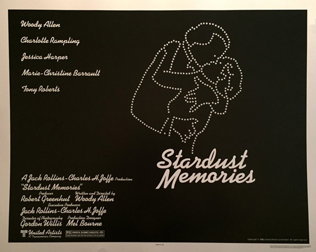
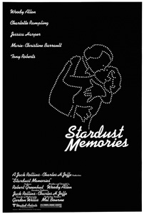
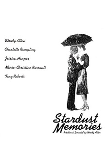
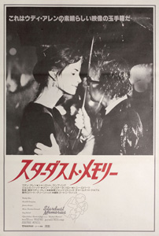
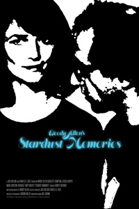
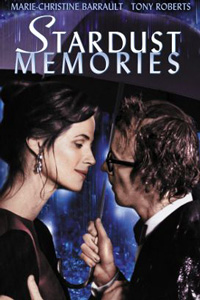
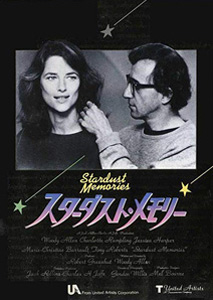

The filmmaker tries to reconcile his conflicting attraction to two very different women, the earnest, intellectual Daisy (Jessica Harper) and the more maternal Isobel (Marie-Christine Barrault) while being haunted by memories of his ex-girlfriend, the mercurial Dorrie (Charlotte Rampling). The conflict between the maternal, nurturing woman and the earnest, usually younger one, is a recurring theme in Allen's films.
Allen considers this to be one of his best films in addition to The Purple Rose of Cairo and Match Point. Considered by some to be an homage to 8½ by Federico Fellini, the film is shot in black-and-white in the style of Fellini's surrealist films of the 1960s and examines the semi-auto biographical story of a famous filmmaker (Allen) who is plagued by fans who prefer his "earlier, funnier movies" to his more recent artistic efforts. Allen however denies that this film is autobiographical and regrets audiences interpreted it as such. The film sharply divided both audiences and critics and, to this day, it provokes strong reactions with some Allen fans proclaiming it his best picture and perhaps just as many classing it among his worst. It was nominated for a Writers Guild of America award for "Best Comedy written directly for screen."
Allen considered calling this film, 4, indicating that it was not half as good as Fellini's 8½.
The dream sequence in which a deranged fan shoots Sandy took on a whole new meaning after John Lennon was shot and killed a couple of months after the film was released. Allen later commented on the irony of the situation.
"One long cry of anguish about the price of fame comes perilously close to self-pity. And self-abuse." - Time Out
"Allen never seemed more indulgent, posturing, or physically repulsive - and yet all the film's many strengths lie in its anatomisation of this nasty display." - Film 4





